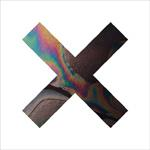

Music Reviews
-

Ringo Deathstarr Mauve
Ringo Deathstarr may seem like another MBV knock off at first, but their punk rock urgency and exquisite pop hooks, especially those found on their latest album, demand your attention and your eardrums.
Peter Quinton disregards all other colors in the Crayola box in reviewing the latest from Ringo Deathstarr -

Mumford & Sons Babel
Three years ago, Mumford & Sons was thrust into the spotlight when their debut album, Sigh No More, began to sell millions of copies. If the concept of a multi-million selling album wasn’t odd enough, interest was furthered even more-so by the band’s revivalist Americana sound. While Andrew Ciraulo didn’t particularly care much for their debut album, he decided to give Babel a chance in hopes that the band might surprise him.
They didn't...... -

Cat Power Sun
It's her first album of all-original material since 2006's "The Greatest," but does it live up to its expectations as a "comeback?"
David Hogg reviews... -
Calexico Algiers
Calexico travel to Algiers and discover that wherever you go, you're never that far from home. With a renewed sense of confidence and songs that open onto vast landscapes, the band has released their finest record since Feast of Wire.
It's 2:30 in the morning at a bar in Nogales when Joshua Pickard reviews... -

Dinosaur Jr I Bet On Sky
The grunge progenitors and punk legends are back after three years for their third album since reuniting.
Forrest Cardamenis reviews... -

Woods Bend Beyond
Sun and Shade saw Woods experiment with everything from electrified kraut-rock to wispy 1970s-style folk songs. While I did enjoy aspects of that effort, it seemed to fall victim to its own tenuous ambitions. Does Woods finally manage to pull it all together on their latest LP?
The answer is a sweetly resounding 'Yes'..... -
The Killers Battle Born
The Killers' fourth album is their best effort since Hot Fuss. Bursting with a joy and passion, this record is the sound of a band that's fully embracing their identity.
Joe Marvilli heads to Nevada and sees how committed the band is to their state logo... -

The Corin Tucker Band Kill My Blues
Corin Tucker releases a second solo album, which will definitely leave fans wishing for a Sleater-Kinney reunion.
Stephen Wragg reviews... -

Grizzly Bear Shields
The highly lauded Brooklyn band draw out an impeccably arranged effort that distances itself a little bit more from the quaint convolutions that molded their present day signature sound.
Juan Edgardo Rodríguez falls into the 1% on this one... -

The xx Coexist
After one of the most successful independent debut albums of recent years, The xx return with Coexist. But have they left themselves anywhere new to go?
Joe Rivers fades to black...